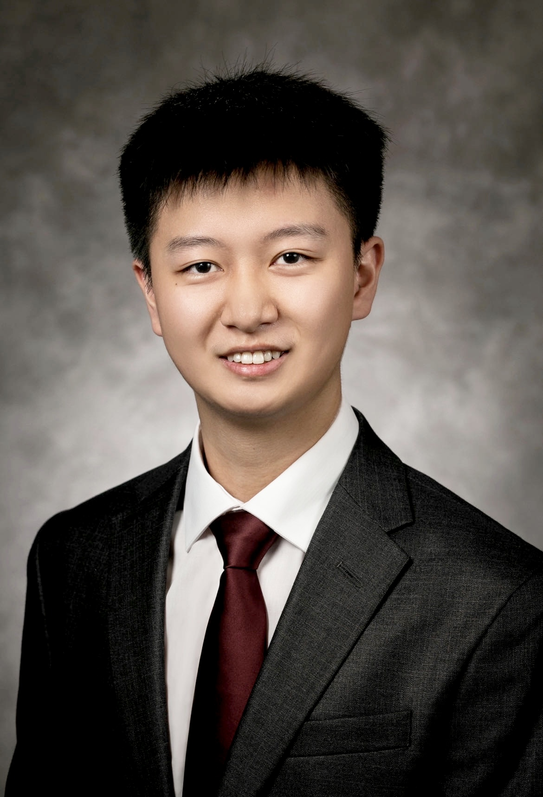
Welcome to my homepage!
I am currently a PhD student in Department of Statistics, North Carolina State University. Previously, I obtained my Master's degree of Biostatistics from Department of Biostatistics and Bioinformatics (B&B), Duke University. I was advised by Dr. Roland Matsouaka at Duke. Prior to my Master's study, I got my Bachelor's degree of Mathematics and Applied Mathematics from Southeast University (Nanjing, China). My current research interests mainly focus on causal inference.
Here is my Resume.
Email: yliu297[at]ncsu[dot]edu
Links: Linkedin Google Scholar Twitter Github ORCiD
Kitty Porky Album:
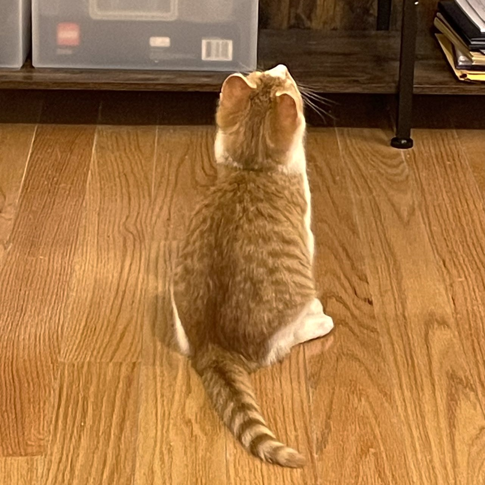
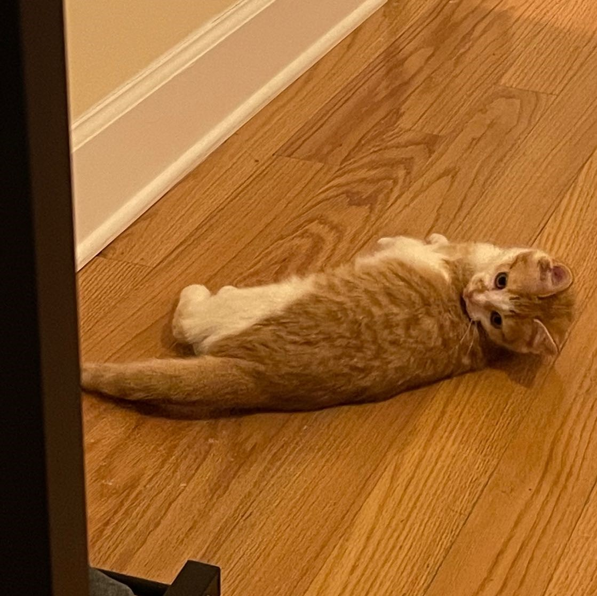
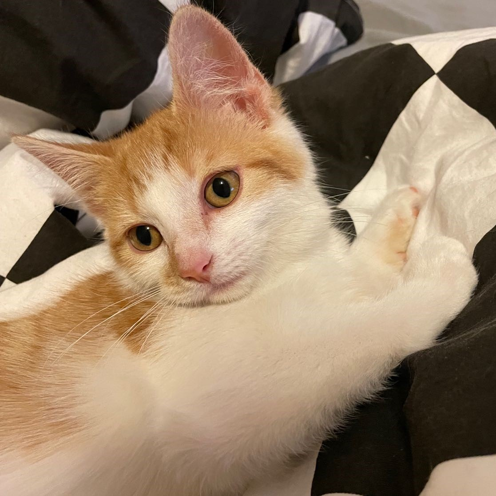
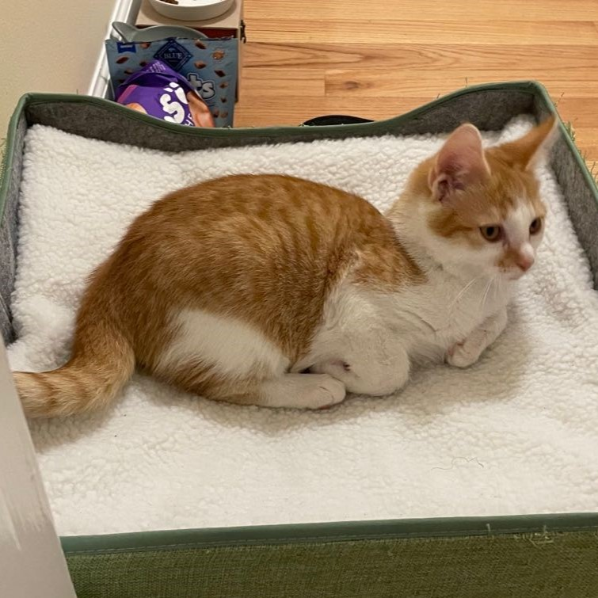
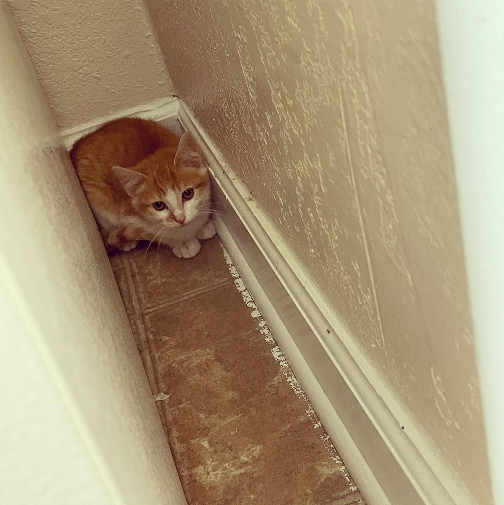
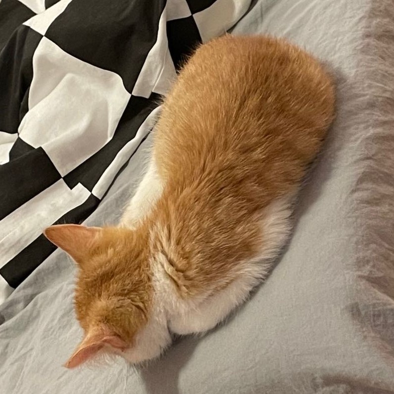
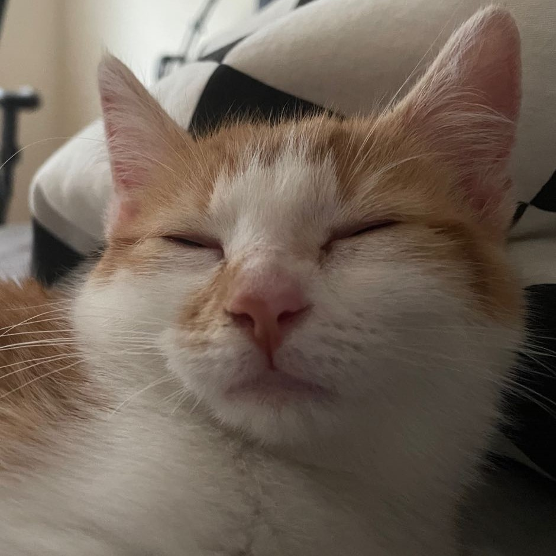
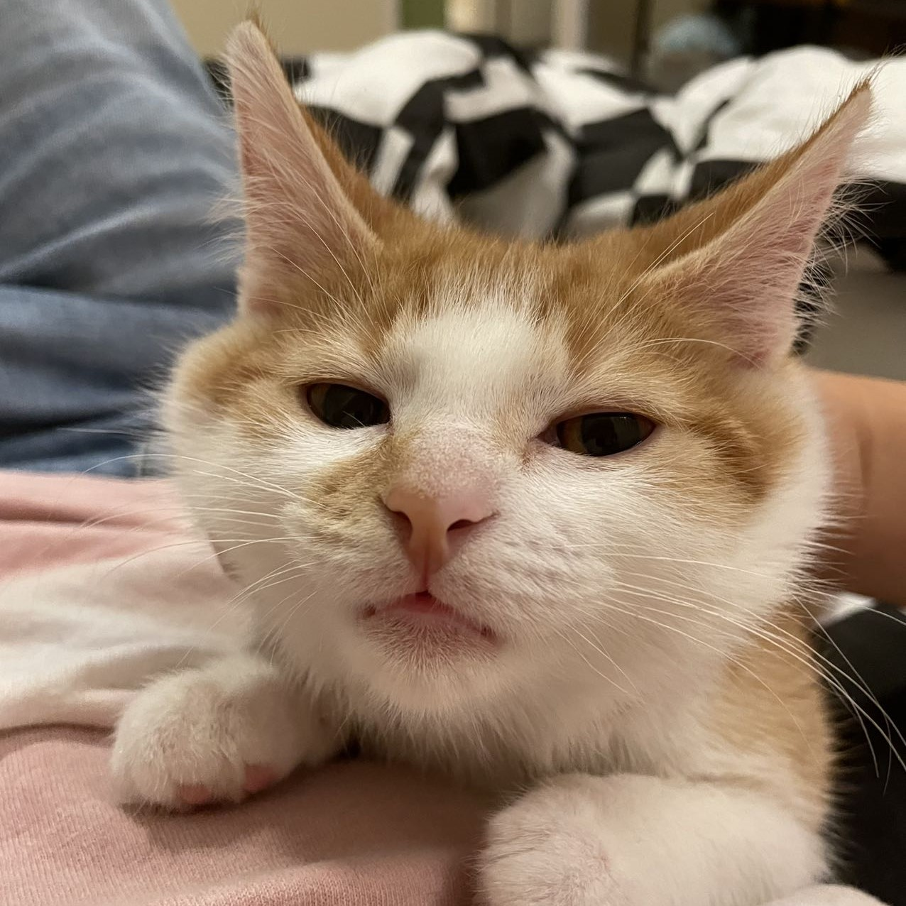
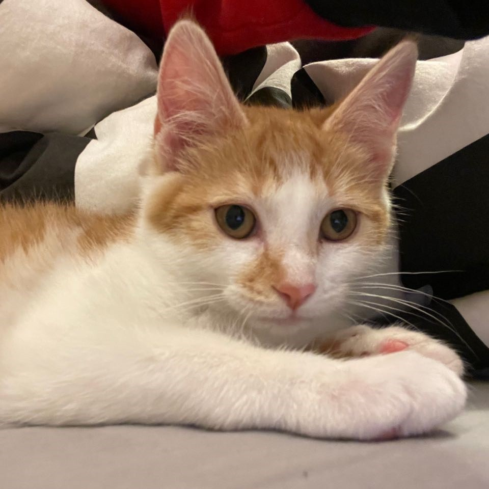
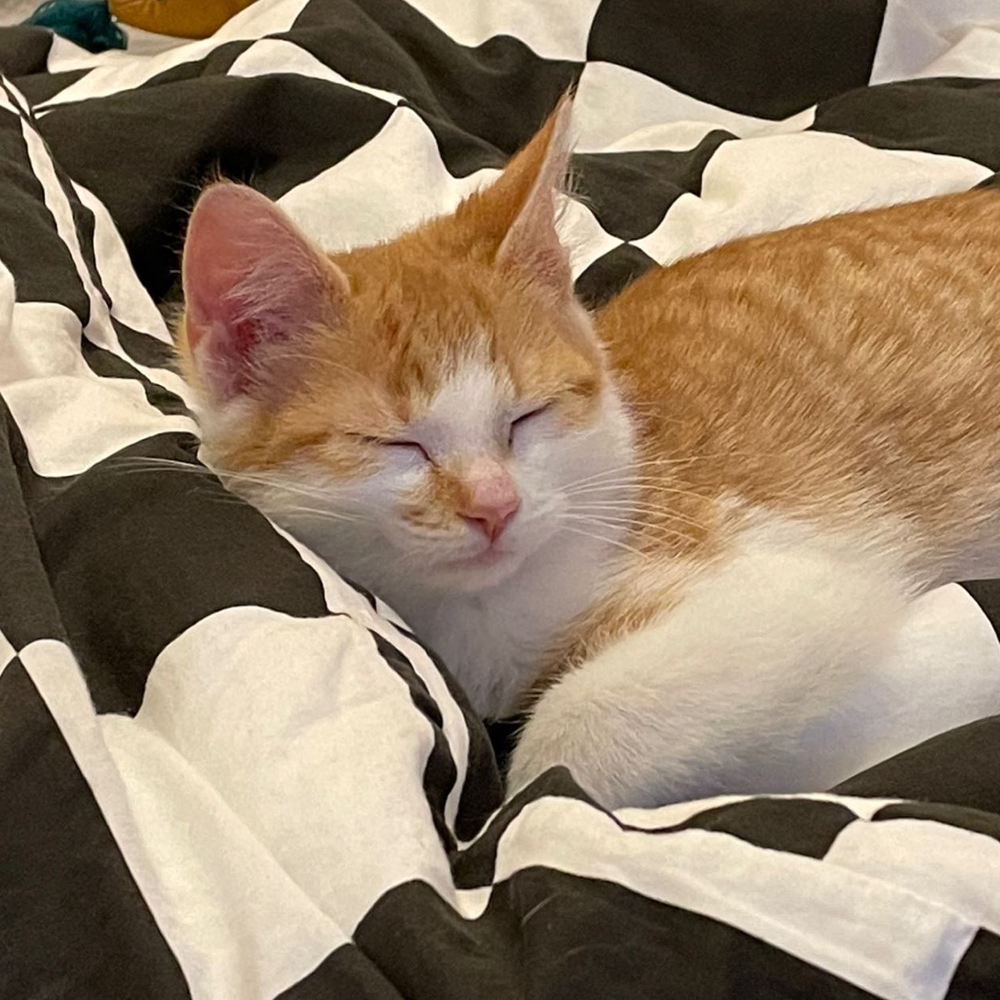